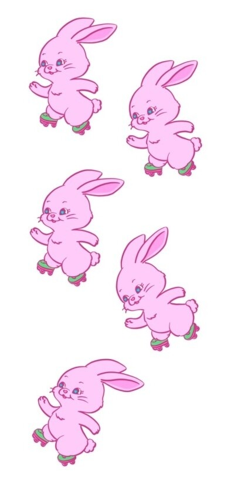

2022년에 가장 기대되는 K-POP 걸그룹 1위로 선정되었다. ADOR 대표인 민희진이 제작 총괄해서 민희진 걸그룹으로도 불린다.
데뷔일인 2022년 7월 22일 기준 멤버들 평균 나이는 만 16.4세이다. 또한 막내인 혜인은 2023년 4월 20일까지 야간 활동 시간 제한 대상이다.[36]
소녀시대 이후 멤버 전원이 미성년자 때 데뷔한 걸그룹이다.
멤버 전원이 한국어, 영어를 모두 구사할 수 있다. 데뷔 직전 민희진이 한국 걸그룹에 대해 굳이 '모든 멤버가 한국어와 영어를 할 수 있다'고 언급했으므로 외국인 멤버가 포함되어 있는 다국적 걸그룹으로 추정되었고,
실제로 호주-베트남의 이중국적인 하니, 호주-한국의 이중국적인 다니엘이 공개되었다.
대한민국 외교부에서 발표된 문서(공식 보도자료)를 통해, 멤버 하니가 베트남 국적을 보유하고 있다는 사실이 밝혀졌다.# 이 때문에 뉴진스는 한-베트남 수교 30주년 기념 리셉션에도 영상 메세지를 보냈고, 여기에서
한국어와 베트남어로 한-베트남 수교 30주년을 축하했다.#
7월 1일에 공개된 멤버 수를 의미하는 다섯 마리의 토끼가 각각 초록색, 흰색, 분홍색, 하늘색, 노란색 등의 색상들을 가지며 눈동자에 '♡'가 있고, 순서대로 같은 방향을 향해 롤러스케이트를 타고 있으며 그중에
센터에 있는 분홍색 토끼와 마지막 노란색 토끼 두 마리만 불꽃 같은 아우라를 내뿜고 있다.
2022년 8월 1일, 공개된 New Jeans의 멤버별 앨범을 통해 초록색 토끼는 다니엘, 흰색 토끼는 해린, 분홍색 토끼는 하니, 하늘색 토끼는 혜인, 노란색 토끼는 민지로 확인되었다. 2022년 11월
12일자에 공개된 NewZips 에피소드에서 불꽃 아우라를 내는 토끼들은 민지와 하니에 대응되는데 이는 데뷔 전 먼저 공개되었던 멤버들을 의미하는 것으로 민희진의 아이디어라고 한다.
민희진은 데뷔팀 지향점을 ‘숙련’보다는 ‘즐기기’에 두고 있고, 진심으로 즐기는 사람에게서 나오는 에너지는 엄청나게 강력해서 보는 사람까지도 춤추게 만든다고 한다. 그리고 업계에서 (내가 아닌) 남이 말해줬을 때
듣기 좋았던 들은 말 중에 가장 기분 좋은 두 단어가 '세계관'과 '아티스트'라고 말했는데, 대신 인위적으로 만들어낸 설정보다 자연스러운 흐름과 복선을 좋아한다고 밝혔다. HYBE에서 진행하는 웹툰 및 소설
세계관처럼 오리지널 스토리에 맞춰가는 것보다 자연스럽게 상상할 수 있는 세계관을 더 중요시 해서 ADOR 소속 아티스트는 웹툰 세계관 같은 것이 안 나올 가능성이 더 크다.[37]
멤버들의 평균 키는 166cm이며, 멤버 전원이 160cm 이상이다.[38] 멤버들 간의 키 차이가 그리 크지 않은 편이라 전체적으로 조화를 이룬다.
모든 멤버가 자매가 있다.[39]
모든 멤버들이 남동생이 없다.[40]
하니를 제외한 모든 멤버가 4, 5월생이다.[41][42]
모든 ABO식 혈액형이 존재하는 걸그룹이다.[43]